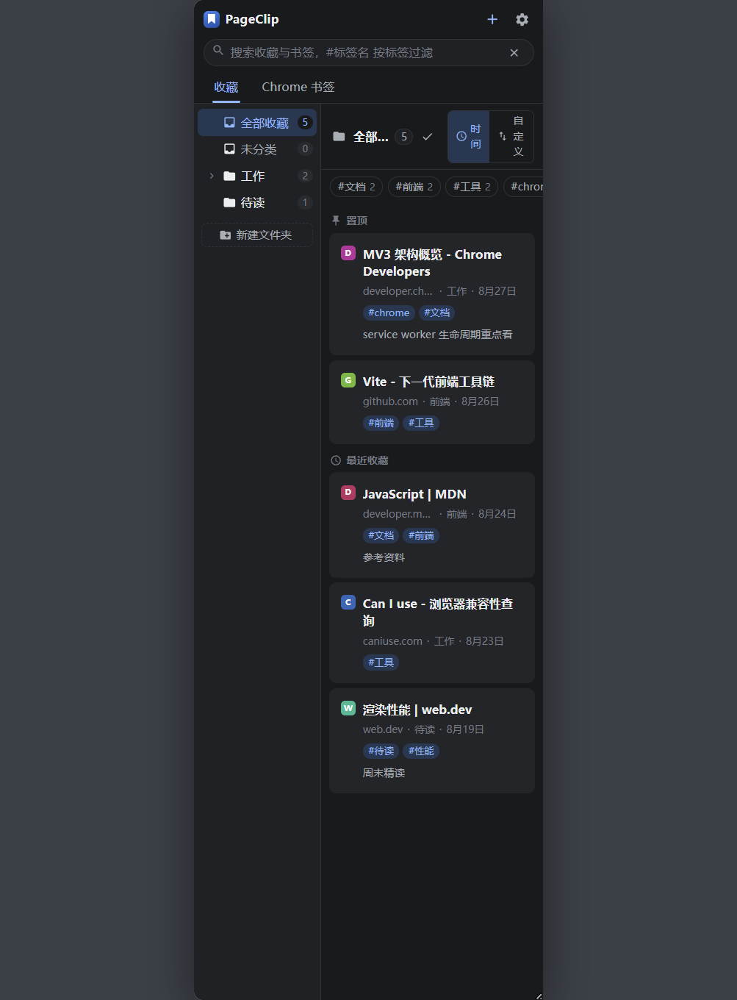
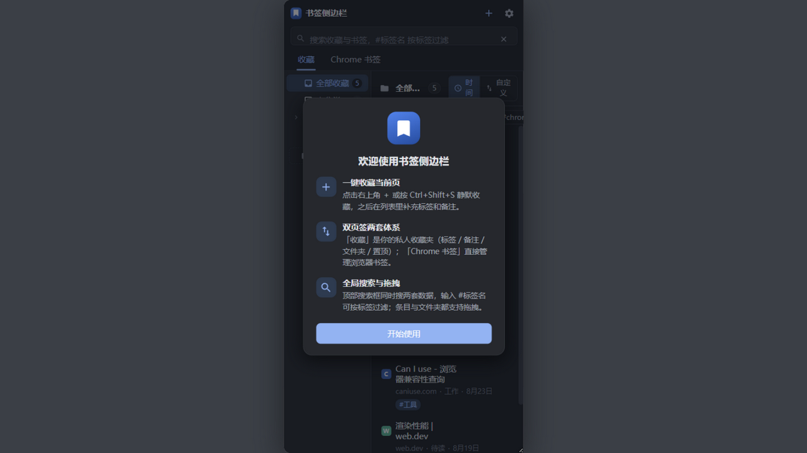
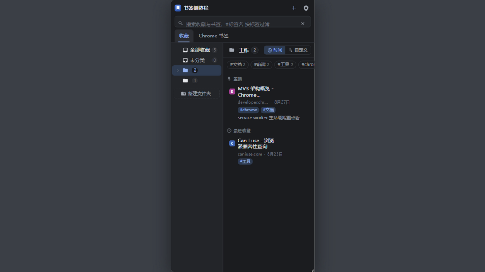
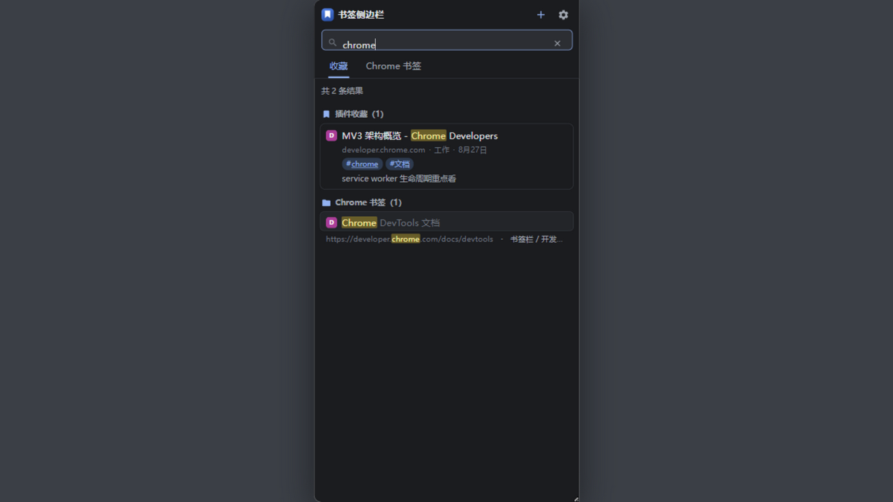
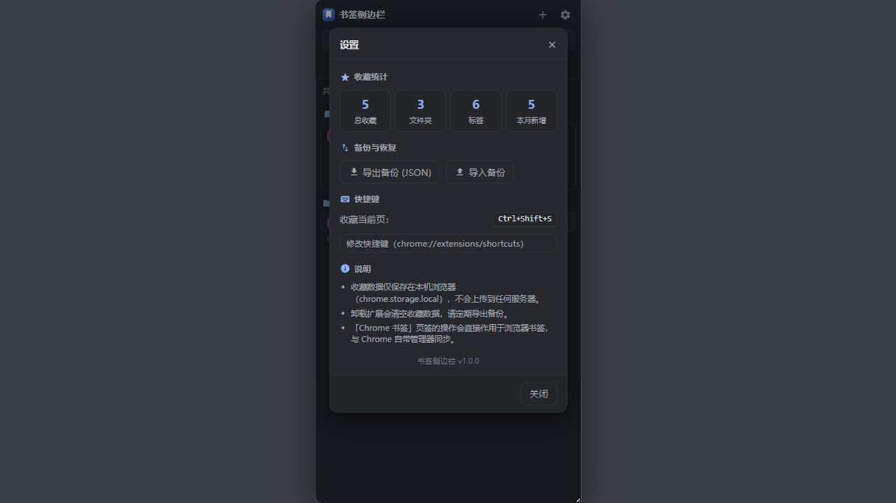
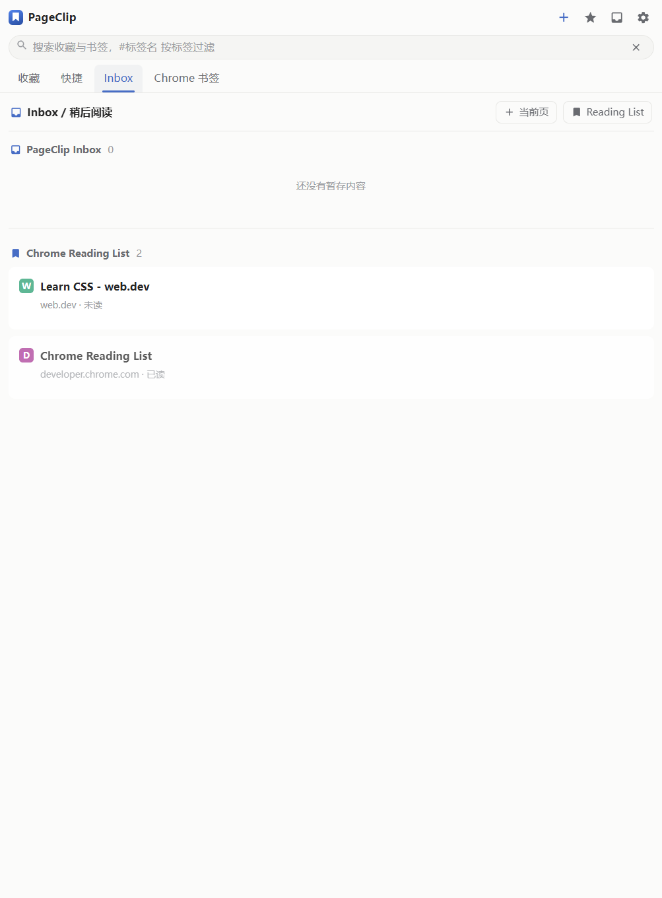

永久收藏
Permanent collection
标签、备注、嵌套文件夹、置顶、自定义排序和全局搜索。
Tags, notes, nested folders, pinning, custom ordering, and global search.
PageClip 是一个本地优先的 Chrome 扩展：收藏网页、整理标签和文件夹、暂存 Inbox、保存标签集合，并在需要时用客户端加密备份到 Google Drive。
PageClip is a local-first Chrome extension for saving pages, organizing folders and tags, keeping an Inbox, preserving tab collections, and manually backing up encrypted data to Google Drive.

把浏览器当作自己的工作区，不再把永久收藏、稍后阅读、快捷标签和 Chrome 原生书签混成一团。
Keep permanent bookmarks, reading items, quick tab collections, and Chrome native bookmarks in clear, separate workflows.
标签、备注、嵌套文件夹、置顶、自定义排序和全局搜索。
Tags, notes, nested folders, pinning, custom ordering, and global search.
保存单页或当前窗口标签集合，集合可改名、排序、删除和恢复。
Save a page or a tab collection, then rename, reorder, edit, delete, and restore it.
PageClip Inbox 与 Chrome Reading List 分开管理，删除和完成操作可撤销。
Keep PageClip Inbox separate from Chrome Reading List, with recoverable delete and complete actions.
导入时保留根目录和嵌套结构，不改变 Chrome 原生书签。
Import the complete tree without modifying Chrome native bookmarks.
手动选择备份密码或本机密钥，客户端加密后才上传 Google Drive。
Choose a backup password or device key; encryption happens before upload to Google Drive.
没有广告、分析脚本或自建服务器。
No ads, analytics scripts, or separate application server.





Read the source, report a bug, or request a feature. Use GitHub Issues for privacy questions and data requests.